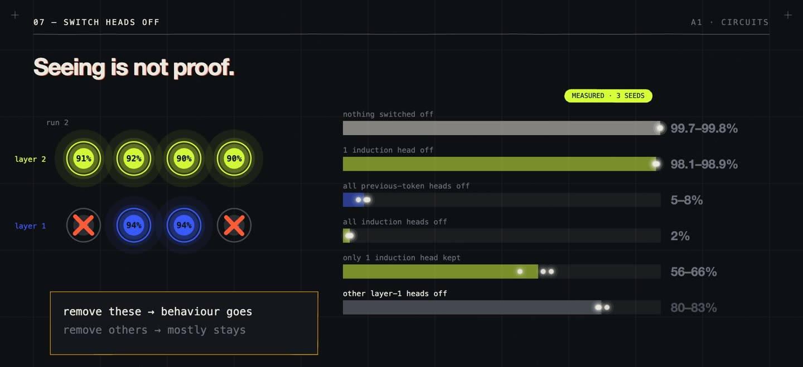
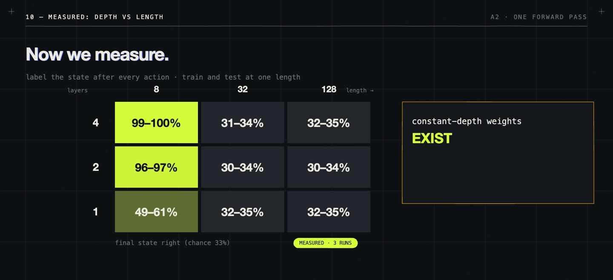
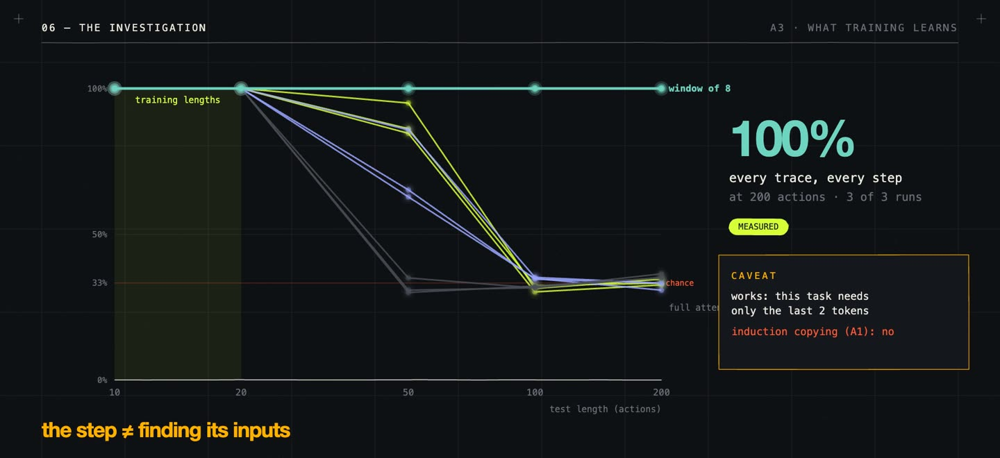
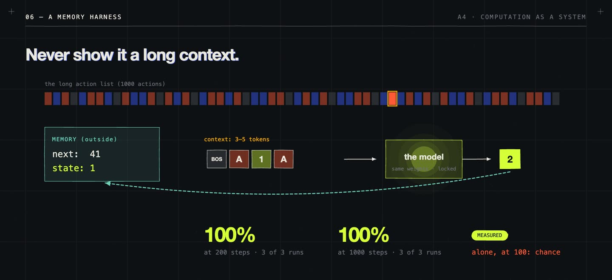
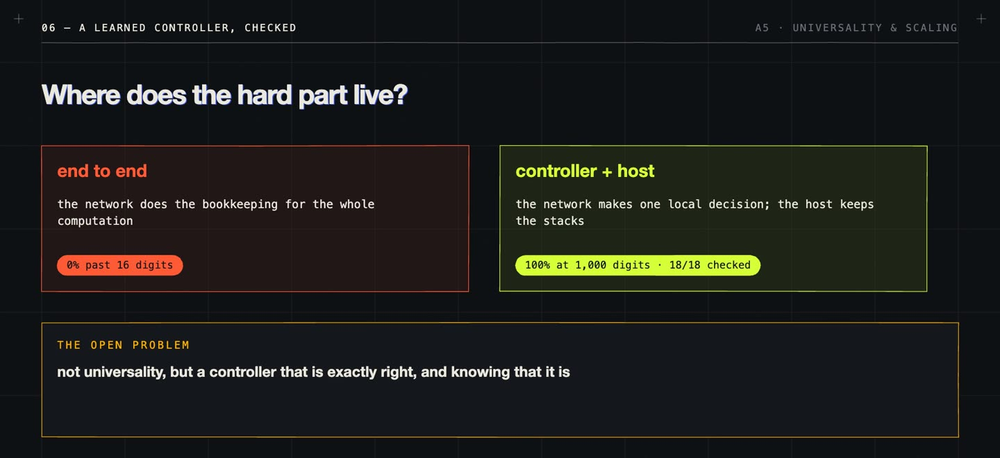

/ 5 VIDEOS · 55 MIN · 20 MIN READ
Understanding Transformers:
what they compute, and what they need.
A written guide to the advanced series. Five short films ask what a transformer actually computes, what training makes it learn, and what has to be built around it before it can run a long computation reliably. This guide goes further than the films: the theory behind each episode, how every experiment was set up, the complete measured results, the dead ends, and what remains open.
Watch the playlist on YouTube ↗ · The films follow Intro to Transformers, which covered the architecture. This series starts where that one ends.
01 / The question behind the series
We know exactly what arithmetic a transformer performs. We have proofs about what idealized transformers can and cannot compute, and growing evidence for specific circuits inside trained models. What we know much less about is which computation large-scale training will actually discover, and when a system built on top of it stays reliable beyond what it was tested on.
The series is built on a literature review of that gap, covering work up to October 2026. Its summary fits in one table:
| Part of the story | Established | Still open |
|---|---|---|
| Architecture and resources | Exact forward-pass equations; bounds and universality constructions for specified models | A sharp capability boundary for each practical architecture and budget |
| Circuits | Causal evidence for selected induction, arithmetic, state and feature-composition mechanisms | Complete, faithful explanations that transfer across prompts and models |
| Learning | Controlled cases where training learns particular algorithms | Predicting which algorithm a large model will learn from its data and optimizer |
| Generalization | Task-specific theorems and many controlled demonstrations | Predicting extrapolation to much longer or different inputs |
| Test-time computation | Extra steps, search, feedback and tools help in measured settings | When extra computation gives sustained gains rather than amplified errors |
| Universal execution | Exact control plus unbounded memory can simulate any Turing machine | Learning a reliable controller that uses that memory correctly |
Underneath the table are four questions that are easy to mix up, and each film keeps them apart:
- Expressivity: do weights exist that compute the mapping under given resource limits?
- Learnability: does a given training procedure, on given data, find a correct solution?
- Generalization: does the learned solution stay correct on the relevant unseen inputs, for example ten times longer?
- Mechanism: which representations and operations actually produce the answer?
High accuracy at length 20 does not settle length 200. An explicit weight construction does not show that training will find it. A feature you can decode from a model does not show that the model uses it. Each episode makes one of these points with a measurement.
All experiments use tiny models I trained myself, three times each with different seeds, on a laptop-sized budget. Every number on screen carries a tag: MEASURED (our code, three seeds, recomputed by a test), EMPIRICAL (reported in a paper), THEOREM, CONSTRUCTED (hand-built weights) or HYPOTHESIS. Before each voice-over was recorded, the papers were checked against their claims. That check caught real mistakes, for example that our machine’s group, S3, is solvable, so a constant-depth shortcut does exist.
02 / The machine we keep coming back to
From the second episode on, almost every experiment uses the same toy problem: a machine with three states and three actions, starting in state 0.
A 1 2 0 rotate
B 1 0 2 swap 0 and 1
I 0 1 2 do nothing
actions: A B A I B
states: 0 1 0 1 1 0 → answer 0
Order matters: starting from 0, AB ends at 0 but BA ends at 2, so counting the actions doesn’t work. You have to track the state. Inserting I anywhere changes the length without changing the answer, which makes it a clean test of whether a model is tracking state or leaning on position and statistics.
There are two equivalent algorithms for it, and the series keeps returning to both. The sequential one updates a single state per action. The parallel one treats each action as a whole table, a function from states to states, and composes tables in a balanced tree. Because function composition is associative, the tree gives the same answer with far fewer dependent steps:
tree: table(x_1 … x_T) = compose(table(right half), table(left half)) log₂ T rounds
The second form is how a fixed-depth network could track state without one layer per action. It is the subject of A2, and the reason the AB/I example matters: a summary of a chunk has to be the whole table, because a single final state discards distinctions a later step may need.
03 / A1 · Circuits
Watch on YouTube ↗ · 12:20
When a trained transformer gets the right answer, what computation produced it? The episode opens a model up.
The grid of vectors, and what a head does
Picture token positions as columns and layers as rows; every cell is a vector. Attention moves information between columns, the MLP transforms it within a column, and the residual stream carries it upward while each component adds an update. One head computes:
a_ij = softmax over allowed j of ( q_iᵀ k_j / √d )
update_i = W_O Σ_j a_ij v_j
Anthropic’s circuits work splits a head into QK, which decides where it reads, and OV, which decides what the read information does downstream. A bright attention weight tells you only the first half.
The induction trick
In A B C A, why predict B? A previous-token head first writes, at every position, which token came just before. A second head at the last A then searches for a position whose “previous token” is A: that is position 2, whose own token is B, so it copies B. Two simple read/write operations compose into “find the earlier occurrence and copy what followed”, with no built-in search instruction.
The experiment, including the part that went wrong
The data is a start token, a run of random tokens from a vocabulary of 49, then the same run again. The first half is pure noise (the best possible loss is about 3.9, and our models sit at about 4.0). The second half is fully predictable if the model finds the earlier copy. The model is as small as possible: attention only, no MLPs, four heads per layer, in one-layer and two-layer versions.
The first attempt used repeats of a fixed length, 20 tokens. The two-layer model solved it almost immediately, with no induction head: one head simply learned to look 19 positions back. That is a correct solution to the data, and the wrong algorithm. Varying the repeat length between 8 and 32 tokens rules out any fixed offset, and the only general solution left is to match content. That detour became the series’ first lesson: a model learns whatever solves your training data, so the data has to rule out the shortcuts.

| Measurement (3 seeds) | Result |
|---|---|
| One-layer model, repeated half | 6–10% |
| Two-layer model, repeated half | 99.7–99.8% |
| Phase change (the loss falls off a cliff) | steps 300–600, every seed |
| Previous-token head’s attention to position −1 | 96% (one head, or two heads in two runs) |
| Layer-2 heads attending to the token after the earlier copy | 87–92%, all four |
| One induction head switched off | 98% |
| All previous-token heads off | 5–8% |
| All induction heads off | 2% |
| Only one induction head kept | 56–66% |
| Other layer-1 heads off | about 80% |
| Repeats of 50 tokens (trained up to 32) | 14–28% |
Two lessons sit in those rows. Training often builds the same mechanism more than once, so switching parts off one at a time can hide a part that matters. And even this clean circuit only works within the range it was trained on.
MLPs, superposition and sparse autoencoders
Attention gathers inputs into a column; an MLP can combine them. A hand-built example on our machine: nine ReLU units, one per state–action pair, each firing only when both inputs are on, with an output matrix that maps each pair to its next state. All nine pairs come out exactly right. This is a construction. It shows an MLP can do the step, not that a trained model does it this way.
Real features rarely get their own neurons. In superposition, more features than dimensions share a space, and sparsity keeps the interference tolerable. Training the toy model ReLU(WᵀWx + b) ourselves packs five sparse features into two dimensions as a pentagon. A sparse autoencoder, an analysis model trained afterwards on the activations, recovers four of the five directions at cosine 0.93–1.00 and the fifth at 0.78. At production scale, Anthropic traced a two-step chain in Claude 3.5 Haiku: Dallas → Texas → Austin. Swapping the Texas features for California makes the model answer Sacramento (as reported). The same work notes a direct shortcut path coexisting with the two-step one.
Known: interpretable, causally relevant mechanisms exist. Open: whether a recovered diagram predicts behaviour outside the examples it was found on. Several decompositions can fit the same activations, and interventions can push a model off its normal distribution.
04 / A2 · What can one forward pass compute?
Watch on YouTube ↗ · 13:19
A transformer has a fixed number of layers. Its total work grows with the input, but the number of dependent steps it can chain in one pass does not. So which sequential computations fit?
The theory
- Log depth for any finite-state machine. Liu et al. construct transformers that simulate any finite automaton in depth logarithmic in the input length, using exactly the tree of tables above. For automata whose transformations form a solvable group, constant depth suffices. Our machine’s actions generate S3, which is solvable.
- An upper bound. Merrill, Sabharwal and Smith show that saturated-attention transformers under their floating-point assumptions sit inside TC⁰, constant-depth threshold circuits. It is an upper bound for that model, not an equivalence for every practical transformer.
- Parity, a cautionary case. Parity is easy for a two-state recurrent machine and lies inside TC⁰, so the bound alone cannot explain why transformers struggle to learn it in a length-generalizing way. Representation, data and optimization matter.
- Languages for algorithms. RASP describes transformer programs as select-and-aggregate operations. C-RASP makes a counting fragment precise: Yang and Chiang compile it into softmax transformers that work at any length without position encodings.
The measurements
Small transformers (width 64, 1–4 layers, 2,000–3,000 steps, three runs each) are trained to output the state after every action, each at one fixed length.

| Layers | Length 8 | Length 32 | Length 128 |
|---|---|---|---|
| 1 | 49–61% | 32–35% | 32–35% |
| 2 | 96–97% | 30–34% | 30–34% |
| 4 | 99–100% | 31–34% | 32–35% |
Chance is 33%. The models aren’t doing nothing at length 32: averaged over every position, four layers get 64–68% of states right. They get the early steps and lose the thread later.
The counting language makes a sharp prediction, and it holds. Two identical four-layer models train on lengths 1–20. One learns a counting question, “more A than B so far?”; the other learns the state. Counting stays at 87–93% at length 200, ten times anything it saw. State tracking is at 97–98% at length 10 but already 38–40% at length 20, inside its own training range. A count never gets harder as the input grows; a composition does, because every new action has to be combined with everything before it, in order.
Finally, a layer-by-layer linear probe asks whether the model builds the tables the tree trick needs. It can decode which of the six possible tables the actions so far amount to at 22% after the embedding (chance 17%), climbing to 48–49% after the last layer. The state alone climbs from 37% to 81–82%. That is consistent with partial tree-style summaries, but decoding a feature isn’t proof the model uses it.
The takeaway: possible is not learnable. Weights that work at any length exist, and two thousand steps of training didn’t find them.
05 / A3 · What does training learn?
Watch on YouTube ↗ · 10:54
On bounded training data, many functions agree. One uses a reusable transition rule; another leans on positions or statistics that happen to hold up to length 20. Zhou et al. conjecture that transformers tend to learn length-generalizing solutions when a short RASP-style program valid at every length exists. So: train on lengths 1–20, test on 200, and look at what was learned.
Four setups, same machine, same size
Every model is width 128, four layers, RoPE position encoding, 3,000 steps, three seeds, tested on 500 fresh sequences per length.
- Direct: read the actions, output the final state.
- Trace after: read all the actions, then write every intermediate state.
- Interleaved: write each state right after its action, so every step only needs the last two tokens.
- Looped: one shared block applied once per action, re-reading the input each time, supervised only on the final answer.
| Setup | Length 20 | Length 50 | Lengths 100, 200 |
|---|---|---|---|
| Direct | 36% | chance | chance |
| Trace after | 100% | 32–34% | chance |
| Looped | 100% | 61% (1 seed), 33–35% | chance |
| Interleaved | 100% | 85–95% | chance |
The direct model doesn’t learn the task even inside its training range: one answer out of three is a very weak signal about a long chain of steps. Format matters a lot, since the same trace written in a different place goes from the best result to the worst. But with full attention, nothing survives ten times the training length.
Where it breaks, and why
Because the traces write every intermediate state, we can find the first wrong step. Trace after fails almost immediately (median first error at step 2–4): it learned to find action k relative to where the equals sign sits, and in a longer input the equals sign has moved. Interleaved fails late and in a strikingly consistent place, around step 53–57 at both length 100 and 200, roughly 110 tokens in. A rule that is the same at every step shouldn’t break at a fixed place, so three experiments test three suspects:
- Unseen positions. Train with every batch starting at a random offset up to 500. Result: no better (63–86% at length 50, first error still at step 53–56). In hindsight this was expected: RoPE only depends on the distance between tokens, so shifting everything changes nothing the model sees.
- No position information at all. Result: worse, chance at length 50, first error at step 34–37. The model now has to work out which token is the previous one from attention alone.
- Too much context. Each state only needs the last two tokens, but attention spreads over everything before them, and the longer the input, the more distant tokens compete. Limit attention to the last 8 tokens. Result: 100% at 50, 100 and 200, with every one of the 500 traces at length 200 correct step by step, on all three seeds.

So the model had learned the right step all along. What broke was finding the right tokens in a context longer than anything it trained on. The window works here only because this task needs just the last two tokens. Induction copying, from A1, could not use a short window. The general lesson is narrower and more useful: the learned step and the way a model finds its inputs are separate things, and either one can be what breaks.
Two more tests close the episode. Shift the statistics so that 80% of actions are I, which makes correct answers no harder. Interleaved stays at 100%, but trace after drops to 85–97%, looped to 82–92% and direct to 48–65%: those three learned something that leans on the usual mix of actions. And the looped model did worse than published results. Fan et al. report strong length generalization from looped transformers trained with a length curriculum, no position encoding and whole-answer outputs. Ours had none of those, so it tests the simple idea, not their method.
The takeaway for chain of thought: intermediate steps help when the format makes every step local. Writing more tokens is not enough on its own.
06 / A4 · Computation as a system
Watch on YouTube ↗ · 9:40
Models rarely run alone. They get sampled many times, checked, given memory and tools, and split into teams. This episode takes the A3 interleaved model and never retrains it. It wraps the model in five systems and measures what each one buys, with 200 problems per test and 64 samples at temperature 1.
| Resource | What can grow | What growth doesn’t guarantee |
|---|---|---|
| Sequential steps | generated tokens or loop iterations | correct long execution |
| Search | candidates, branches | finding or selecting a correct answer |
| Memory | stored states and records | accurate retrieval and updates |
| Tools | external operations | the right call with the right arguments |
| Workers | agents, messages, rounds | useful division of the work |
Sampling: coverage is not selection
That is the chance the candidate set contains a success, not the chance the system returns one. At length 50, one attempt is right 75–88% of the time. With 64 samples, an exact checker selects a correct trace 99–100% of the time; majority vote reaches 78–94% and the model’s own favourite 82–94%. At length 100, not one of the 64 samples is correct, and then no selector and no amount of sampling helps.
Search, memory and workers
Step-by-step search with an exact checker reaches 100% at length 200, at 1.3–1.4 checker calls per step. That checker knows the machine’s rule, which is the point: it shows how much of the work a verifier can quietly do, and why verification has to be counted as computation.

The memory harness keeps the current state outside the model and shows it only 3–5 tokens per call, all inside its training range. The same weights that were at chance at length 100 now run at 100% for 200 and for 1,000 steps. Workers make the interface lesson concrete. Split the sequence into chunks: workers that return each chunk’s whole table compose to 100%, while workers that return only a chunk’s final state score 28–38%, chance. I and AB both end at 0 from state 0 but differ from state 1, and a single number throws that away. What workers really buy, against a budget-matched single model, is latency: one round instead of ten.
Reliability and credit
Keeping a fixed success rate as T grows needs ε to shrink roughly as 1/T. Inside its training range the model made zero errors in 20,000 steps, yet A3 showed failures that wait for a particular position. Zero errors on the tested distribution is not a guarantee on another. The episode ends on attribution. When every system reaches 100%, a result executed by a tool or a checker is evidence about the system, not about the model’s own computation.
The takeaway: the system can take a model from chance to perfect, but only around a step the model really has.
07 / A5 · Universality and scaling
Watch on YouTube ↗ · 9:12
Two different questions: do weights exist that implement an interpreter, and will a given trained model execute an arbitrary program correctly? An existence theorem answers only the first.
Finite is finite, and when transformers are universal
A deployed model with a fixed context, bounded precision and no growing memory has finitely many configurations, so it is formally a finite-state machine (so is every physical computer). Pérez, Barceló and Marinkovic prove that transformers are Turing-complete, but with hard attention, arbitrary-precision rationals and unbounded steps. Those assumptions are part of the result; fixed precision is not enough.
What memory buys
| Controller plus | Can compute |
|---|---|
| no growing memory | finite-state computation |
| one stack | pushdown computation (context-free languages) |
| two stacks | anything a Turing machine can |
A tape is two stacks back to back: everything left of the head in one, the current cell and everything right of it in the other. Moving the head pops a symbol from one stack and pushes it onto the other. A finite controller only ever sees its control state and the two tops, so its decision is local, and if its states and alphabet are finite, every possible input can be checked exhaustively. Exact local transitions plus a host that enforces the memory rules support an induction proof over execution length. Average success on test programs gives nothing like that.
move right: pop c from R, push c onto L → L = a b c, R = d e, current = d
The experiment
We build a Turing machine that adds one to a binary number, with a 6-rule controller, correct on every input up to 12 digits and at 1,000 digits. Then we learn the controller: a small MLP (8 inputs, 32 hidden units) trained on the controller’s decisions from runs on all numbers up to 4 digits. It saw 15 of its 18 possible inputs in training. Checked on all 18, it gets all 18 right, and so it runs correctly on 1,000-digit numbers. The contrast is a four-layer transformer (width 128, RoPE) trained end to end on numbers up to 16 digits: 99–100% at 16 digits, then 0% at 24, 32, 48 and 64.

Scaling laws, as reported
C_train ≈ 6 N D
Loss falls as a smooth power law in model size N, data D and compute (Kaplan et al.; the form above is from Hoffmann et al.). The exponents are fitted in particular experiments, not constants of nature: a later refit of the same data got different values. And they describe loss, not whether a task succeeds. At test time each resource gives its own curve, and each flattens for its own reason:
- Samples: coverage saturates near one and never helps problems the model never solves, and a weak selector flattens it earlier.
- Steps: errors compound, (1 − ε)^T, so longer runs pay only if per-step errors fall fast enough.
- Workers: gains depend on whether the pieces compose (tables 100%, single numbers chance).
Snell et al. find that the best way to spend test-time compute depends on how hard the problem is for the base model. Universality appears nowhere in these curves: two stacks say a computation is possible, and nothing about how fast errors fall as you spend more.
The takeaway: “Turing-complete” is not the point. Where the hard part of a computation lives decides whether it works.
08 / What each solver asks the model to learn
The same state-tracking task can be solved by very different systems, and equal accuracy means different things in each:
| Solver | The model must learn | The system supplies |
|---|---|---|
| Direct prediction | map the whole sequence to the final state | input and output format |
| Token scratchpad | find the next action and update the state | autoregressive feedback |
| Latent loop | maintain and update an internal state | repetition and stopping |
| Sampling + checking | propose valid traces | a candidate budget and a selector |
| Search over traces | propose useful next steps | branching, pruning, backtracking |
| Stateful tool controller | choose correct actions and arguments | storage and exact execution |
| Chunk workers | produce composable summaries | scheduling and ordered composition |
A result executed by a tool is evidence about the model’s use of that tool. A recovered transition circuit is evidence about the model’s own computation. Both are useful; they answer different questions.
Learn the step. Build the system. Check everything.
Across five films the pattern holds. Small models learn local rules well and fail on length for specific, findable reasons. A system around the model can carry a learned step a very long way through memory, checkers and a tape, but it cannot supply a step the model never learned. The central open problem is not universality. It is getting a controller that is exactly right, and knowing that it is.
What the series doesn’t claim matters too. It reports scaling laws from the literature and fits none of its own. It studies length generalization, not long-context retrieval in large models. It covers one simple looped setup, not looped transformers in depth. It uses memory harnesses and checkers, not real tool APIs. Everything is measured on tiny models and one toy machine, which is what makes exhaustive checks possible and also what limits the claims.
The next step takes the argument to real language models. In AbstractGym, a bonus episode, Qwen3-14B answers 236 of 240 grammar puzzles correctly but completes the actual algorithm only 28 times, and the same questions of step, memory and system play out at scale. The AbstractGym code and results are on GitHub, and the trained checkpoints are on Hugging Face.
This guide is adapted from the films and the literature review behind them. Measured numbers come from our own runs, three seeds each, and every one is pinned by a test in the companion code, which will be linked here when it is public. Numbers attributed to papers are the authors’ own.
Further reading
- A Mathematical Framework for Transformer Circuits and In-context Learning and Induction Heads — A1.
- Toy Models of Superposition, Towards Monosemanticity and On the Biology of a Large Language Model — A1.
- Thinking Like Transformers (RASP), Transformers Learn Shortcuts to Automata and Saturated Transformers are Constant-Depth Threshold Circuits — A2.
- Counting Like Transformers (C-RASP) and Neural Networks and the Chomsky Hierarchy — A2.
- What Algorithms Can Transformers Learn? (the RASP-generalization conjecture) and Looped Transformers for Length Generalization — A3.
- Tree of Thoughts and Scaling LLM Test-Time Compute Optimally — A4.
- Attention is Turing-Complete — A5.
- Scaling Laws for Neural Language Models, Training Compute-Optimal Large Language Models and Chinchilla Scaling: A Replication Attempt — A5.
- AbstractGym (code, results, the A7 branch) and its checkpoints: tiny controllers, Qwen3-14B bracket step, Qwen3-1.7B bracket step, Qwen3-14B DFS step, Qwen3-14B membership, A7 arms — the bonus episode.